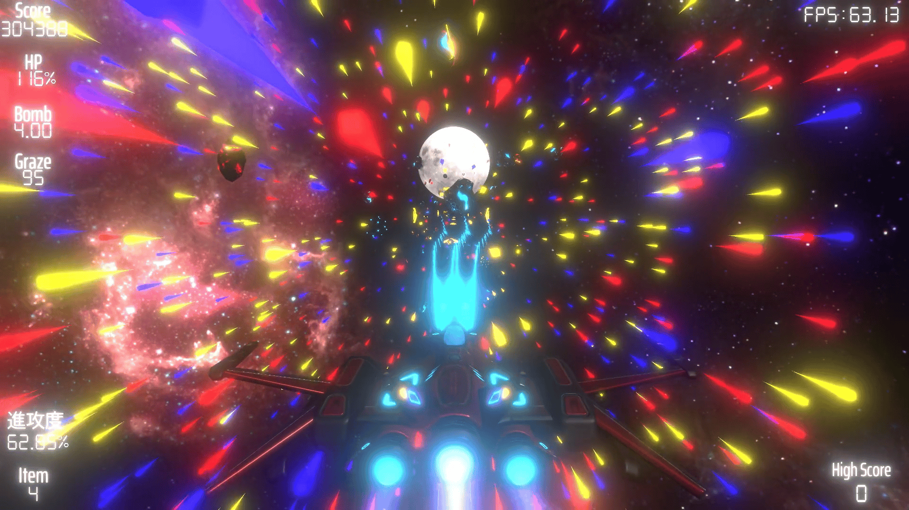

第三回(2025/06/10)
挨拶
こんにちは。TAMです。
今回は、比較的短い間隔で作れました。
まぁ、暇つぶしみたいなものなので気が向いたら書きます。
今回は、ゲームのストーリーを書いていなかったので書こうと思います。
EnergyRecptureのストーリー
全体の流れ
エネルギーを自在に操れるようになって数百年、
今では恒星間を自由に行き来できるようになりその凄まじい発達速度は銀河系内へと知れ渡った。
しかし、それを利用しようとする星によって、ワープポータルステーションを乗っ取られ、
月面基地、火星兵器工場を占拠され太陽系内のエネルギーを吸収されている。
エネルギーを取り戻せ!
Stage01:Earth>>>Moon

エネルギーを取り戻す以前に月面基地、火星兵器工場が乗っ取られているため、
まず月面基地へと向かう。
Stage02:Moon
地球に被害が及ばないように、戦闘能力の無効化をする。
月面基地には地下格納庫や敵輸送ゲートがある。
油断して攻撃を受けないように注意せよ。
Stage03:Moon>>>Mars
月面基地での物資やエネルギーは火星が送っている。
放置すると攻撃力の無効化をした意味がなくなってしまう。
そのために、火星兵器工場へ向かって武器の生産を停止させる。
攻撃が激しくなるので注意せよ。
Stage04:Mars
これより火星兵器工場の生産を停止させる。
今回はかなり危険な作戦になる。
体験版はここまでです。
ネタばれはあまりしたくないので、ここまでにしときます。
続きが気になる方は2年後までお待ちください。
あとがき
本日でEnergyRecapture制作開始からちょうど二年。
気づいたら時間が流れてしまうので、一日一日を大切にしたいものです。